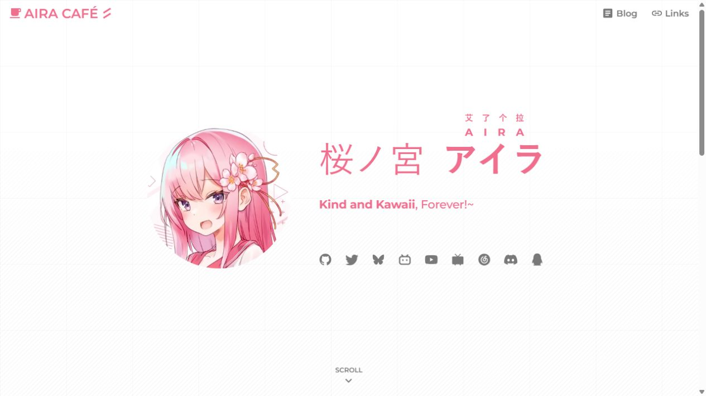
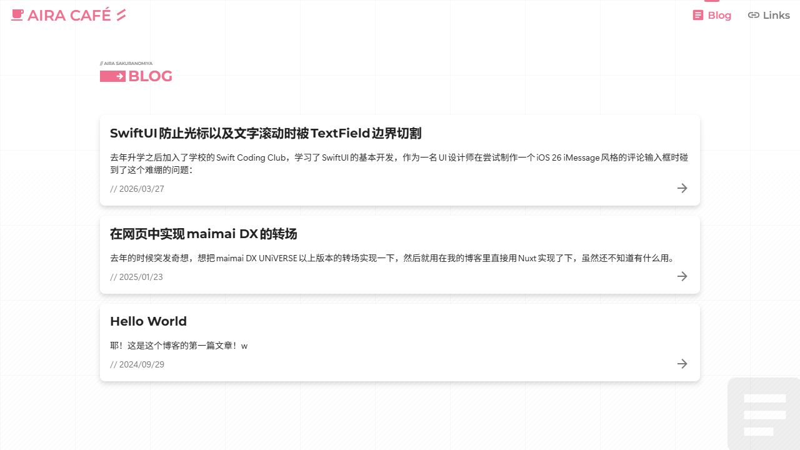
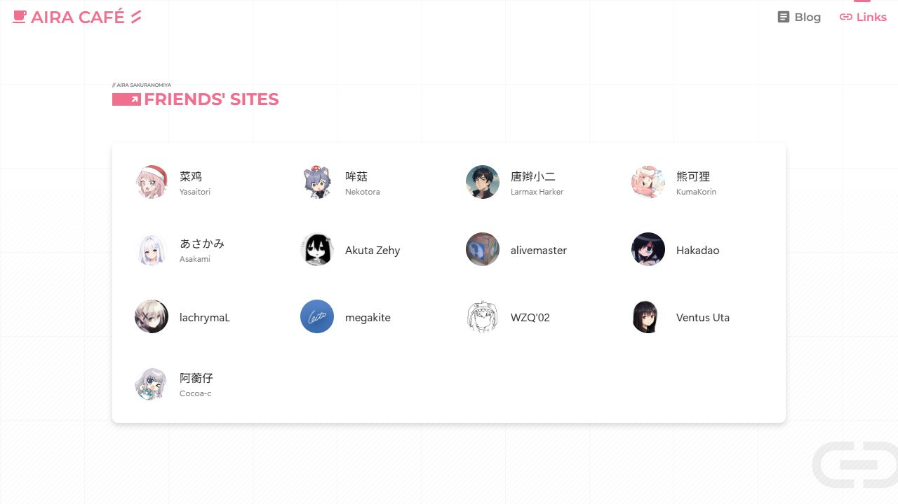
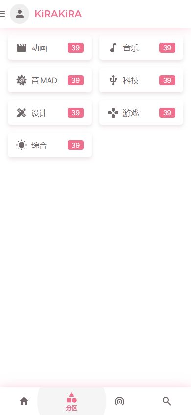
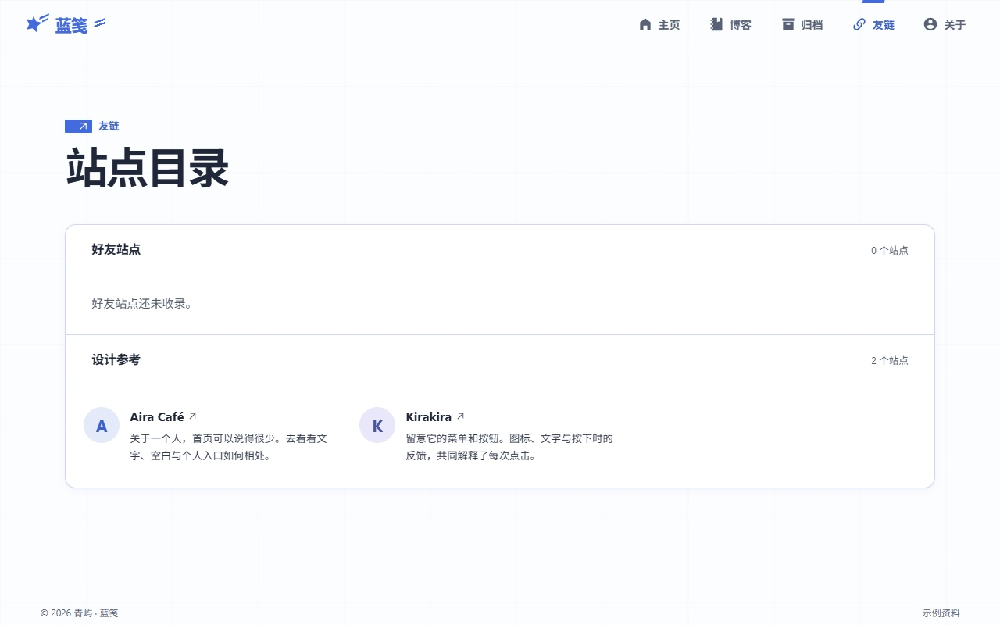
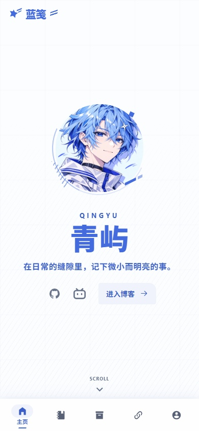

Aira · 主页


可带走的判断 让人先认出站主，才需要决定去哪。
个人博客设计研究
青屿 / 个人站的视觉与信息设计
主页让人认识我，博客让人读我写的东西，归档让人从年份找回一篇旧文。同一抹蓝，到了不同页面，要做不同的工作。
参考站取样
以下为浏览器页面截图，点击可查看原图。图注描述可见事实。每张下方另记一条可以借到个人博客的判断。

可带走的判断 让人先认出站主，才需要决定去哪。

可带走的判断 字保持完整。色块边缘分出图标，字级、留白分出内容。

可带走的判断 友链要认人和选去向，适合并排，文章摘要适合单列阅读。
可带走的判断 社区有许多同时可选的内容。蓝笺可借当前状态的清晰程度。

可带走的判断 把反馈集中在刚点的地方。当前页身份由颜色和文字共同确认。
参考与成品
每组先看参考，再看蓝笺。桌面上的阅读顺序、手机上的当前状态，比照同一个任务判断。点击任一图可打开未裁切的截图。
先认头像，再从青屿和 QINGYU 组成的一组文字读到座右铭，最后决定去社区或进入博客。蓝色浅网格连接整体，进站动作与身份叙述保持清楚的间距。
同一行里粗标题先读，摘要辅助判断，日期和箭头退到下一层。蓝笺用直线、斜切栏目记号与蓝色去向提示组织这一列。
连续的头像与名字构成目录。把人像、站点说明和出站箭头放进同一个入口，缩窄页面后减少列数。

先看两幅图的导航。KIRAKIRA 手机底栏选中项展开栏目名。蓝笺小屏导航也让当前项合并图标与文字，其他入口保留图标和可访问名称；键盘聚焦也会展开对应文字。页面上沿保留站标，底栏负责五个目的地。

视觉表达
「截图」指静止画面，「交互」指实际切换，「源码」指作者写出的规则，「设计假设」留给本项目实验。按压与选中分开看，前者回答点击是否生效，后者告诉读者现在在哪。
| 问题 | 对象 | 依据 | 发生了什么 | 迁移到蓝笺 |
|---|---|---|---|---|
| 结构 | Aira 主页进入博客与友链 | 截图 | 顶部入口相同，内页分别进入单列文章卡片和多栏人名目录。 | 按访客此刻要完成的事决定每屏密度。 |
| 分组 | Aira 栏目标题 | 截图＋源码 | 签名、直边图标底块与文字标题沿同一侧组织。标题源码 | 用色块切分功能，不剪掉文字笔画。 |
| 悬停 | Aira 文章条目 | 源码 | 悬停时卡片上浮、阴影加深，箭头同时变强调色。BlogCard | 整行与箭头属于一次操作；正文文本保持安静。 |
| 选中 | KIRAKIRA 手机底栏 | 交互＋源码 | 从首页切到分区，选中的图标旁出现栏目名，原项收起。BottomNavItem | 窄屏也让读者知道当前位置。蓝笺控件可同用颜色与文字。 |
| 按压 | KIRAKIRA 按钮 | 源码 | Button 使用 v-ripple，并区分 hover、active 与 focus-visible。Button | 借用状态语义，触控按下、键盘焦点各有明确反馈。 |
| 切页 | Aira 页面离场 | 源码 | 普通页面的退出为上移、淡出；文章里的 DX 演示有独立触发。全局样式 | 阅读页适合更短的局部过渡，游戏式演示另作对照。 |
| 可读性 | 蓝笺正文上的弱残影 | 设计假设 | 已知色块与锚点可独立描述；读者能否感到「刚才那页还在」需要用相同内容比对。 | 在正文首次可读时观察重影；任何可辨双字都回到基线。 |
KIRAKIRA 发布分支有自己的 Vue 按钮、图标、涟漪和底栏实现。已查依赖清单未直接声明
@material/web。蓝笺可自主选用 Material Web 并封装自己的状态与主题。
发布分支依赖
Material Web 组件文档
视觉信息架构
先让每页只有一个首要任务。黑白草图表现内容顺序、对齐和密度，可与下面的真实样张交叉看。草图中的示意图、导航占位和间距可以在实验后调整。
/
记得这是青屿的主页。用头像认人，罗马字小标叠在大号网名上方，再读座右铭和账号图标。桌面两块并排，手机按此顺序纵排；进入博客有单独入口。
/blog/
挑一篇想读的文章。栏目以斜切色块开头。粗标题领起每一行，摘要、日期与末端箭头组成同一个单列入口。
/blog/…
专心读正文。导航保持固定的阅读参照。返回入口、顶端标题、发布时间与单栏正文按阅读顺序出现，动效只交接文章标题。
/archive/
从年份找到旧文。年份索引先给出跳转目标，年份分组下用对齐的日期与篇名排成密行。手机把索引缩成紧凑的一行。
/links/
找到一个朋友。每格由人像、名字、站点说明与出站提示组成。桌面形成名录，窄屏减少列数，名字优先保持完整。
/about/
更深入地认识站主。重复同一身份组以辨认站主，自我介绍展开成段落。账号取自与首页相同的配置。
视觉主题
浅蓝网格在全站延续，栏目以对角切口辨认，几何无衬线字用粗细区分网名、标题和元数据。近白底留给长文，大蓝色只落在当前项、动作和少数视觉锚点。
#FCFDFF统一的近白页面背景。
#446BDD站点强调色、链接和主动作。
color-mix(in srgb, #446BDD 8%, white)当前项图标背后的轻色面。
#202738正文与粗标题保持清晰。
#5A667C元数据、说明与 Material 控件轮廓。
color-mix(in srgb, #446BDD 15%, #E7EBF2)区分紧密排列的条目与分组。
color-mix(in srgb, #446BDD 85%, #091A4A)选中项文字与浅蓝表面上的内容。
#FFFFFF导航与控件使用的白色表面。
色板依据正式站的主题配置与全局 CSS。派生色以实际 sRGB 混合公式表示，改变基准蓝后，浅色面、细线和深蓝同步变化。动效原型保留自己的试验配色，主要用于比较层数、方向和模糊范围。
头像、轻按钮可以有曲线。归档年份、行边界与日期列保留直线和稳定的起点，扫读沿着这条线进行。
标题承担命名，箭头承担去向。按同一条基线组织，图标和文字共用同一个命中区域。纯图标链接另有可访问名称。
当前、按压与焦点各有表现。正文落定后保留清楚的文字，装饰活动集中在页头或局部表面。
游戏与网页动效
把转场拆成可复述的变化。前两条根据游戏开发者或复现作者的资料重绘，后两条是蓝笺双向路径的设计分镜。游戏示意图仅标识形状、方向和注意力，不承担时间测量。
Aira 的网页复现采用蓝色实底、斜向轨迹、中心圆标三层。下图按作者代码重绘时序。没有原机逐帧录像，具体时刻只对应网页演示。
白金工作室的 UI 主美说明，深入 Options 时，Cheshire 的剪影向读者靠近。两端据官方画面对照，中间几格是对动作的解释性示意，图形经过简化，时长未作测量。
蓝笺设计分镜。从列表一行转入文章时，共享的标题把视线送到正文。以下为 B 版。首页进入博客另试浅蓝遮挡，C、D 分别将字影和外围模糊加入对照。
蓝笺设计分镜。同一页的浏览器后退与返回入口都要能定位阅读来处。原列表行及滚动位置是返程的参照物。
这三种路径用来检验层级与动效是否说的是同一件事。下表是预期行为。实际浏览器、设备和检查结果分别记在验收页。
| 路径 | 稳定的参照 | 可见变化 | 复核方法 |
|---|---|---|---|
| 博客 → 归档 → 友链 | 站标、导航位置、蓝色网格与栏目标题的切口 | 当前项转移；正文由单列文章、年份索引切换为人像目录。 | 分别从导航和浏览器后退访问，核对选中态、可读标题与地址。 |
| 文章 → 原列表 | 文章标题与列表中的同一条目 | 原题名恢复为列表行，读者可以就近选下一篇。 | 下滚后打开文章再返回，检查滚动恢复、键盘焦点和快速连续返回。 |
| 系统减少动态 | 相同路由、内容和导航语义 | 直接进入内容；蓝色选中态、标题和焦点独立传达切换结果。 | 启用系统减少动态重走正向、同级、返程，检查可读文字和遗留遮层。 |
跨场景实验
| 拿来对照 | 可以共用 | 页面保留自己的部分 | 怎么判断 |
|---|---|---|---|
| 首页账号 / 关于账号 | 同一账号列表、可访问名称、反馈 | 主页紧凑；关于页可用更充分的说明。 | 改一处配置，两页去向同步。 |
| 博客 / 归档 / 文章 | 同个文章地址、题名、时间 | 列表留摘要，时间线突出年份和日期，正文只保留阅读所需元数据。 | 同一篇手记从两处都能抵达，文章只维护一份。 |
| 文章入口 / 朋友网站 | 一行一个链接、可见键盘焦点 | 本地文章用进入提示，出站链接用向外箭头。 | 标题和图标始终导向同一个目标。 |
| 正向阅读 / 返回列表 | 同一局部锚点、短反馈、减少动效路径 | 去程对准标题，返程对准来处和滚动位置。 | 返回后可以立即继续浏览，重复点击不会留下覆盖层。 |
用同一组内容检查宽、窄两版，先问能否一下认出站主、找到指定年份、读完长文；记录第一次走错的入口。
交互原型用同一篇文章跑过四种切换。A 直接换页，B 移动一层标题，C 叠出两层标题。D 的模糊只作用在外围背景，标题保持清晰。这些结果描述绘制行为，阅读舒适度还可以用自己的内容判断。
正式站选 B。标题的位置变化足以把视线从列表引到正文，还能保持一份清楚的字形。C 与 D 留在实验页供对照。栏目之间依靠当前项与稳定的导航交接，首页进入博客的局部遮挡单独比较。后退、连点和减少动效的实际检查见验收记录。